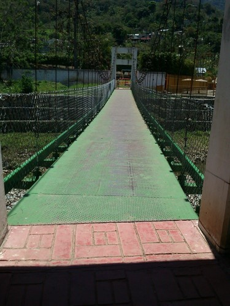
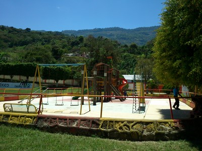
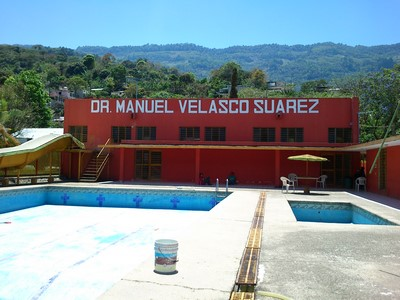
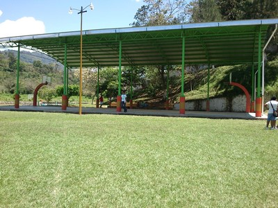
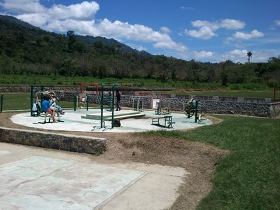

Conjunto de canchas de distintos deportes, basquetbol, futbol, volybol, juegos infantiles, etc.
Pensado para que todo el publico que vive en yajalón o el que lo visita, tenga un rato de diversion sana, mental y fisicamente, tambien cuenta con una alberca para practicar natacion y un area donde se puede cocinar y comer. Además de un salón de fiesta
Se localiza en el Municipio de Yajalón, del lado Oriente Sur.
Si su ubicación esta en el centro puede irse hacia el Mercado, luego sigue hacia el lado Oriente, hasta llegar al Hotel RAM-MAR, despues dobla hacia la derecha, y al llegar a la primer esquina dobla hacia la derecha, sigue todo derecho y a los 5 km encontrara este Parque, que atraves de un Puente colinda con el Parque Infantil.
En el lugar usted puede practicar actividades de esparcimientos como:
---Balneario---
---Fotografía---
---Juegos---
---Picnic---
---Futbol---
---Asistir a Eventos deportivos---





Posicione el mouse sobre las imágenes